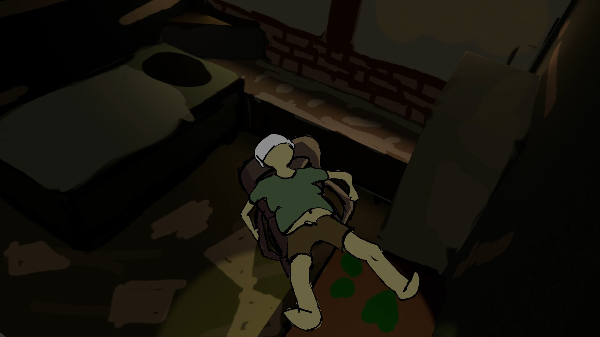
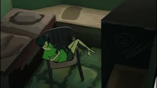
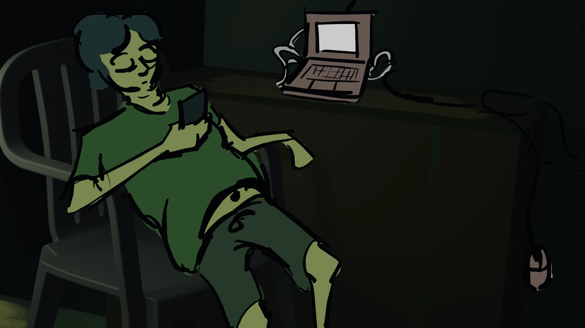
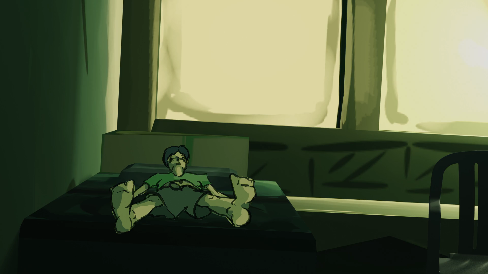
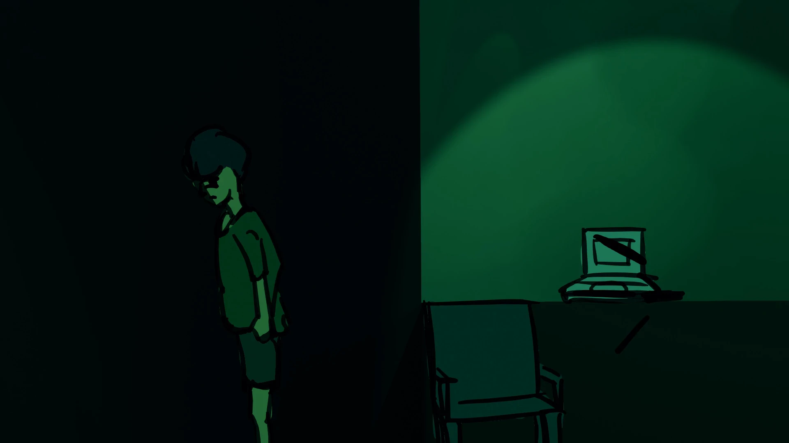
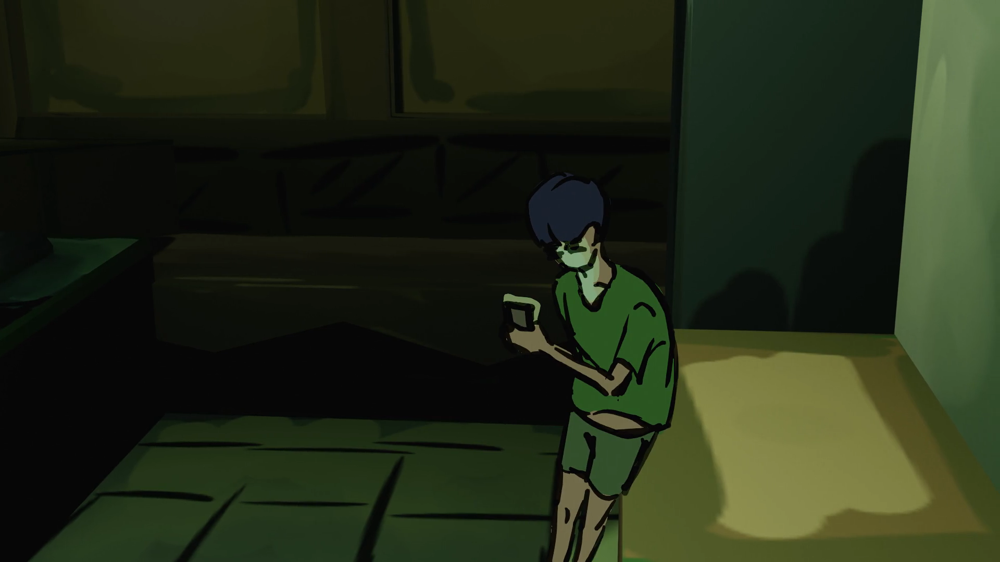

A Nimbu Studio Original
Fat & Jobless began as a ten-second joke. What started as a way to escape reality slowly evolved into an animated series documenting procrastination, false hope and the strange comfort of believing tomorrow will somehow fix everything. The series follows Yagya Singh, a teenager trapped in an endless cycle of fake promises to himself while chasing the dream of becoming an artist.

A ten-second skit introducing the central idea of the series. One decision. One excuse. One more tomorrow.
▶ Watch Episode
Yagya Singh is introduced. His everyday life is filled with procrastination, fake promises and delusive hope until a close friend asks a simple question: "Everything going fine?" He lies. Mostly to himself.
▶ Watch Episode
His mouse breaks. The internet bill goes unpaid. Forced to sit alone, he watches everyone else's lives move forward while his own remains stuck.
▶ Watch Episode
A sudden wave of motivation pushes him to apply for commissions with complete dedication. After the excitement fades, every application comes back rejected.
▶ Watch Episode

He decides to give life one final attempt. A client appears. A fake victory begins.
▶ Watch Episode